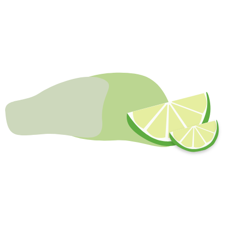
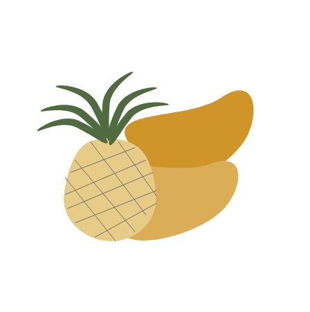
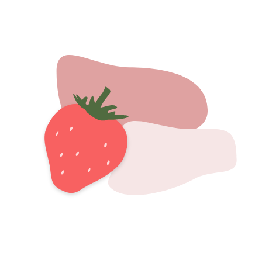
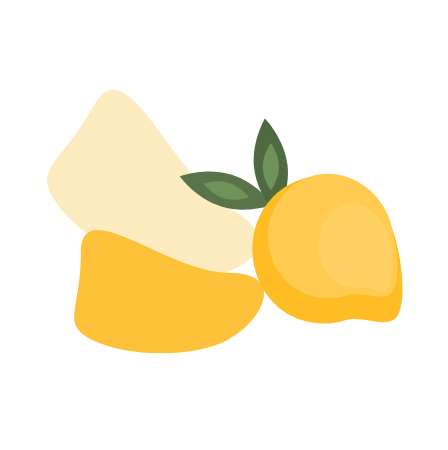

Glæde, glitter & god smag
Det er de små ting der gør en forskel
Pure Drops er en naturlig frugtsirup produceret på skøn overskudsfrugt
fra danske butikker.
Sirup produceres primært på sukker og modne frugter, og det er derfor
ideelt at koge sirup, på frugt der kunne trænge til nyt liv, og dermed
mindske madspild.
Pure Drops er ikke blot det ideelle bæredygtige alternativ. Med tilsat
spiseligt glitter i alle flasker, kan du pifte dine drinks op og
imponere dine gæster med et festligt tvist og skabe godt humør, med
god samvittighed i livets små og store glæder, der kræver at glassene
hæves.
Velbekomme og god fornøjelse!
Sæt glitter på menuen
Drinksopskrifter til enhver anledning
Her kan du se opskrifter på de bedste drinks, selvfølgelig mixet med Pure Drops. Nemmere bliver det altså ikke!
Dark 'N' Stormy
Du kender den med garanti - den søde smag af Ginger Beer og mørk rom, nu tilsat med glitrende Pure Drops Lime. Mums!
Se opskriftStrawberry Daiquri
Man kan nærmest mærke denne drink smelte på tungen. Og sødmen fra Pure Drops Strawberry, kan med sikkerhed pifte denne klassiske jordbær slush-ice op.
Se opskrift
Gin Hass
Man kan altid nuppe en Gin Hass - hvad end det er til festen eller de solrige dage på terassen, passer mango, lemonsodavand og gin altid. Prøv selv.
Se opskriftPure Drops - Lime
Tag det søde med det sure! Eller hvordan er det nu man siger? Under alle omstændigheder, giver Pure Drops Lime dig kant i smagen, og ser super godt ud i mens den gør det. Aldrig har surt været med til at skabe noget så lykkeligt.
Pure Drops - Pineapple
Når først du har lært Pure Drops Pineapple at kende, vil du have svært ved at forestille dig at du har kunne undværre den indtil nu. Ananassens let sure og samtidig søde smag, sætter kulør livets små stunder og tager dig til sydens sol. Hvad venter du på? Vis dine venner hvordan man mixer med denne sirup.
Pure Drops - Strawberry
De røde bærs sødme er ikke til at få nok af! Både i drinks og til de hjemmelavede pandekager kan Pure Drops Strawberry pifte enhver klassiker op - og så gør det jo ikke noget at det glitrer samtidig.
Pure Drops - Mango
Mango er bare go’! Pure Drops Mango glitrer og skinner, og smager guddommelig i drinks eller desserter - men du behøver ikke vælge. Du kan sagtens nyde både drinks og dessert på samme tid (det er faktisk den ideelle kombination i de fleste tilfælde).
psst… vidste du ...
... at der i Danmark smides der over 163.000 ton mad ud om året i detailhandlen? Det er en ærgerlig statestik, men som ikke desto mindre kan ændres! Se med hvordan Pure Drops’ glitrende frugtsirup produceres her under og er med til at mindske madspil. Og hey, hav lige Pure Drops i tankerne, næste gang du skal tilføje lidt glitter i livets små øjeblikke.
del dine Pure Moments med Pure Drops!
#puredropmoments
Del dine Pure Moments med Pure Drops og vind!
Del et af livets gode øjeblikke hvor du har haft gang i Pure Drops, og
vind et af hver eksemplar af Pure Drops varianterne. For at deltage,
følg Pure Drops og læs mere.